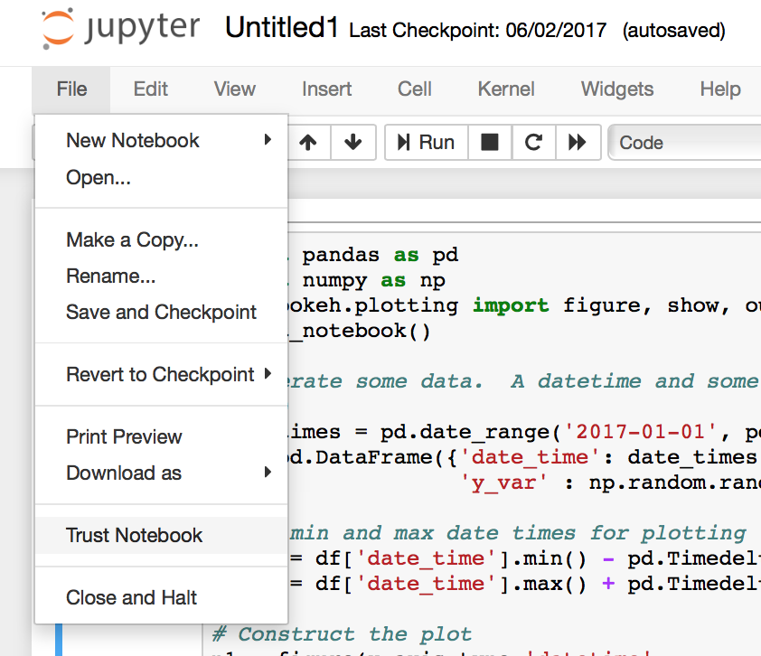

Working in the Notebook¶
Inline Plots¶
Classic Notebook¶
To display Bokeh plots inline in a classic Jupyter notebooks, use the
output_notebook() function from bokeh.io instead of (or in addition to)
the output_file() function we have seen previously. No other modifications
are required. When show() is called, the plot will be displayed inline in
the next notebook output cell. You can see a Jupyter screenshot below:
{kind=link}
Multiple plots can be displayed in a single notebook output cell by calling
show() multiple times in the input cell. The plots will be displayed in order.
{kind=link}
JupyterLab¶
In order to embed Bokeh plots inside of JupyterLab, you need to install
the “jupyterlab_bokeh” JupyterLab extension. This can be done by running
the command: jupyter labextension install jupyterlab_bokeh.
{kind=link}
JupyterHub¶
In order to embed Bokeh plots that don’t use the Bokeh server, you can follow instructions contained in the JupyterLab section and stop there.
If you want to use the Bokeh server, run the JupyterLab instructions then continue with the following instructions.
If you want to run a Bokeh plot that utilizes the python-based Bokeh server, there are some additional steps you must follow to enable network connectivity between the client browser and the Bokeh server running in the JupyterLab cell. This is because your browser needs to connect to the port the Bokeh server is listening on, but JupyterHub is acting as a reverse proxy between your browser and your JupyterLab container.
First, you must install the “nbserverproxy” server extension (requires
python3). This can be done by running the command:
pip install nbserverproxy && jupyter serverextension enable --py nbserverproxy.
Second, you must define a function to help create the URL that the browser
uses to connect to the Bokeh server. This will be passed into show() in
the final step. A reference implementation is provided here, although you
must either modify it or define the environment variable EXTERNAL_URL
to the URL of your JupyterHub installation. By default, JupyterHub will set
JUPYTERHUB_SERVICE_PREFIX.
def remote_jupyter_proxy_url(port):
"""
Callable to configure Bokeh's show method when a proxy must be
configured.
If port is None we're asking about the URL
for the origin header.
"""
base_url = os.environ['EXTERNAL_URL']
host = urllib.parse.urlparse(base_url).netloc
# If port is None we're asking for the URL origin
# so return the public hostname.
if port is None:
return host
service_url_path = os.environ['JUPYTERHUB_SERVICE_PREFIX']
proxy_url_path = 'proxy/%d' % port
user_url = urllib.parse.urljoin(base_url, service_url_path)
full_url = urllib.parse.urljoin(user_url, proxy_url_path)
return full_url
Finally, you can pass the function you defined in step 2 to show()
as the notebook_url keyword argument, which Bokeh will call while
setting up the server and creating the URL for loading the graph:
show(obj, notebook_url=remote_jupyter_proxy_url)
At this point, the Bokeh graph should load and execute python callbacks defined in your JupyterLab environment.
Zeppelin¶
By defaults, output_notebook() apply to only to Juypter. If you want to
use Bokeh to display inline plots in Zeppelin notebooks, you need to install
the separate bkzep package, and specify notebook_type to zeppelin in
output_notebook():
{kind=link}
Trusting notebooks¶
Depending on the version of the Notebook in use, it may be necessary to “trust” the notebook in order for Bokeh plots to re-render when the notebook is closed and subsequently re-opened. The “Trust Notebook” option is typically located under the “File” menu:
{kind=link}
Notebook Slides¶
It is possible to use the Jupyter notebook in conjunction with Reveal.js to generate slideshows from notebook cell content. It is also possible to include standalone (i.e. non-server) Bokeh plots in such sideshows, however some steps must be followed for output to correctly display. Primarily:
The cell containing output_notebook must not be skipped.
The rendered cell output of the output_notebook call is responsible
for making sure the BokehJS library is loaded. Without that, Bokeh plots
cannot function. If this cell type is marked “skip” then BokehJS will
not be loaded, and Bokeh plots will not display. An alternative, if you
wish to hide this cell, is to mark it as the “notes” slide type.
Notebook Handles¶
It is possible to update a previously shown plot in-place. When the argument
notebook_handle=True is passed to show() then a handle object is returned.
This handle object can be used with the push_notebook() function to update
the plot with any recent changes to plots properties, data source values, etc.
This notebook handle functionality is only supported in classic Jupyter
notebooks and is not implemented in JupyterLab or Zeppelin yet.
The following screenshots walk through the basic usage of notebook handles.
- First, import standard functions, as well as
push_notebook():
{kind=link}
- Next, create some plots, and make sure to pass
notebook_handle=Truetoshow():
{kind=link}
- Looking at the handle, see that it is associated with the output cell
for
In[2]that was just displayed:
{kind=link}
- Now, update any properties of the plot, then call
push_notebook()with the handle:
{kind=link}
- After doing so, note that the earlier output cell for
In[2]has changed (without being re-executed)
{kind=link}
More detailed demonstrations of using notebook handles can be found in the following example notebooks:
Jupyter Interactors¶
It is possible to drive updates to Bokeh plots using Jupyter notebook widgets,
known as interactors. The key doing this is the push_notebook() function
described above. Typically it is called in the update callback for the
interactors, to update the plot from widget values. A screenshot of the
examples/howto/notebook_comms/Jupyter Interactors.ipynb example
notebook is shown below:
{kind=link}
More Example Notebooks¶
Many more examples using Jupyter Notebook can be found in the bokeh-notebook repository. First clone the repo locally:
Then launch Jupyter Notebook in your web browser. Alternatively, live notebooks that can be run immediately online are hosted by Binder.
Additionally, there are some notebooks under examples in the main Bokeh repo:
- categorical data
- hover callback
- linked panning
- range update callback
- embed server in notebook
- US marriages and divorces interactive
- color scatterplot
- glyphs
Notebook comms examples: